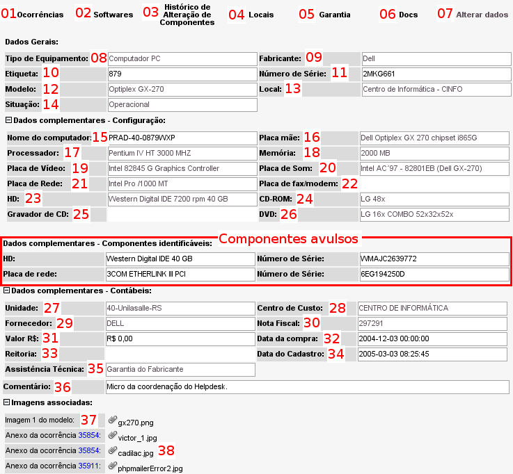
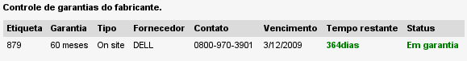

Detalhamento das informações dos equipamentos
A tela a seguir exibe as informações detalhadas de um equipamento cadastrado no sistema.

Tela com as informações detalhadas de um equipamento - versão 2.0rc3
Entendendo todas as funções acessíveis a partir da tela de detalhes:
01 - Ocorrências: Toda vez que um
chamado é aberto no sistema o mesmo é vinculado a um equipamento. Ao clicar no link Ocorrências será exibida a listagem de ocorrências/chamados vinculados ao equipamento.
02 - Softwares: acesso rápido à listagem de softwares vinculados ao equipamento.
03 - Histórico de alterações de componentes. Toda vez que as informações de hardware do equipamento são alteradas é gravado um registro sobre a alteração realizada. Através desse link é possível visualizar todas as alterações de hardware do mesmo.
04 - Locais: toda a vez que é alterada a localização de um equipamento no sistema, o mesmo grava um registro de histórico, dessa forma é possível visualizar todo o histórico de locais/setores por onde o equipamento passou.
05 - Garantia: ao clicar nessa opção serão exibidas as informações referente à garantia do equipamento.

Tela exibindo as informações sobre a garantia do equipamento - versão 2.0rc3
06 - Docs: o OcoMon possui um cadastro simplificado para catalogação de documentos diversos como livros, manuais, mídias, etc.. Ao cadastrar um documento é possível associá-lo a um modelo de equipamento. A opção "Docs" lista todos os documentos vinculados ao modelo do equipamento exibido.
07 - Alterar dados: opção para edição das informações do registro.
08 a 36 - Informações diversas sobre o equipamento. Para um melhor entendimento dessas informações, acesso a página referente ao
cadastramento de equipamentos.
Praticamente todas as informações de configuração do equipamento servem como filtros para a listagem de equipamentos similares. Basta clicar em qualquer uma das informações para ser redirecionado à
listagem correspondente.
Componentes avulsos: nessa área são exibidos todos os
componentes avulsos agregados ao equipamento. Basta clicar no número de série para ter acesso aos detalhes do componente correspondente.
Imagens associadas: aqui são exibidas todas as imagens com algum tipo de vínculo com o equipamento
.
37 -
Imagens do modelo: ao cadastrar um modelo de equipamento é permitido adicionar imagens ao mesmo. Aqui são exibidas todas as imagens que foram associadas ao modelo do equipamento visualizado.
38 - Imagens de ocorrências: aqui são exibidas todas imagens vinculadas às ocorrências relacionadas ao equipamento visualizado. Para ter acesso aos detalhes de cada ocorrência basta clicar no seu respectivo número.